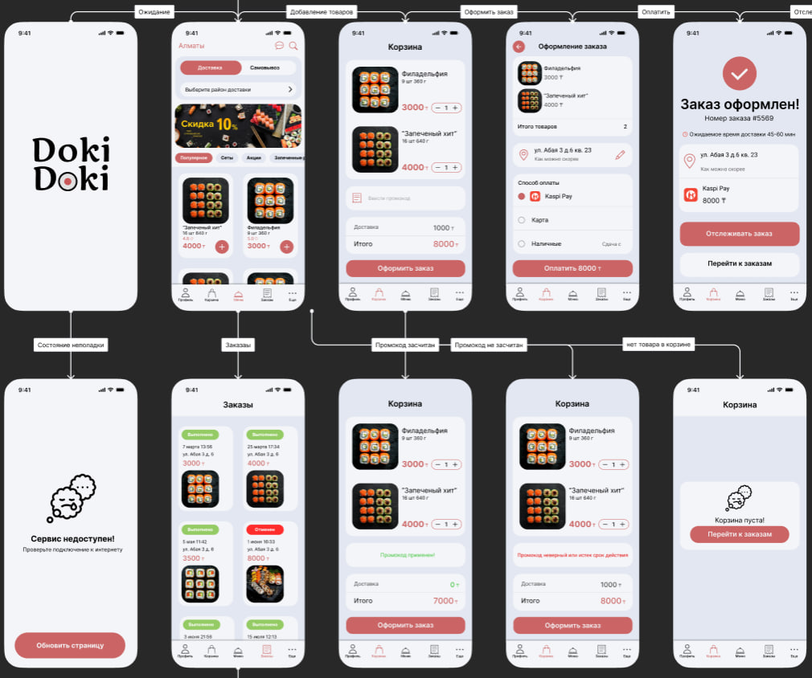
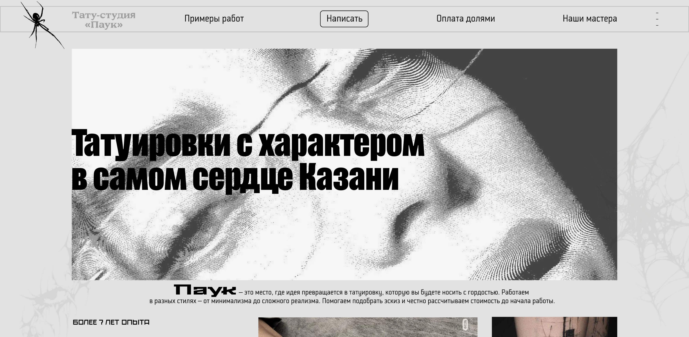
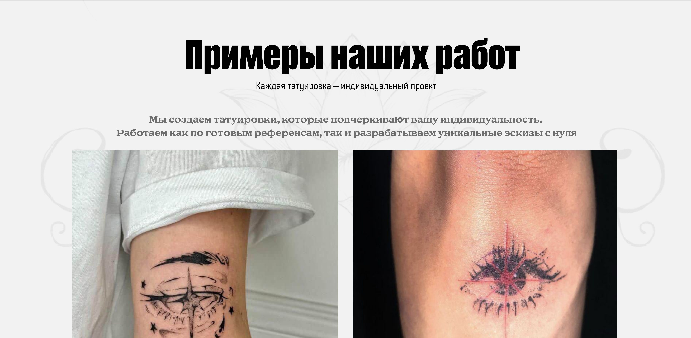

KIVI, школа татуировки
Задача
Сделать сайт школы татуировки с понятной структурой: познакомить с программой и перевести интерес в запись на бесплатный пробный урок.
Решение
Лендинг на Tilda с формой записи на пробный урок, блоками о программе и преподавателях, последовательным путём от первого экрана до заявки.
Результат
Сайт стабильно приводит около 50 заявок в месяц на пробный урок и записи на обучение. Стал основным каналом привлечения учеников для школы.

Coffee Dream
Задача
Реализовать классическую продающую структуру сайта: от первого экрана с обещанием до формы заявки, без потери внимания на пути между ними.
Решение
Тёплая кофейная палитра, пара шрифтов (Playfair Display + Inter), последовательные блоки — обещание, выгоды, процесс подключения, галерея, отзывы, заявка. Добавил интерактивный калькулятор инвестиций на React: выбор формата точки и суммы вложений, прибыль и срок окупаемости пересчитываются сразу. Адаптивная вёрстка.
Результат
Полная продающая воронка: от первого экрана до формы. Адаптив. Готов к запуску и подключению рекламы.


Ресторанное приложение
Задача
Спроектировать мобильное приложение для доставки суши с быстрым заказом и понятным трекингом. Дополнительно — провести UX-аудит существующего референса и показать, как можно улучшить пользовательский опыт.
Решение
Спроектировал User Flow от входа до пост-продажи: онбординг, главная, корзина, оплата, трекинг, успех. Продумал все состояния: загрузка со скелетонами, ошибка сети, пустая корзина, промокод с тремя состояниями, трекинг с четырьмя этапами. Провел UX-аудит референса: сравнил было и стало и обосновал решения по модалке при входе, акцентному цвету, навигации и экрану «Ещё». Собрал UI Kit и компоненты в Figma.
Результат
25+ экранов с User Flow и UX-аудитом. Показал, как сократить шаги, убрать лишние модалки и сделать трекинг понятным.

Банковское приложение
Задача
Большинство банковских приложений перегружены: чтобы перевести деньги, нужно пройти 5-7 экранов, а по пути тебе еще предложат кредит и страховку. Я поставил цель спроектировать приложение, где перевод, оплата и статистика доступны быстро и без раздражения. Дополнительная сложность: важно было продумать не только идеальный сценарий, но и тупиковые ситуации. Что видит пользователь, если у него нет интернета? Если на счете недостаточно средств? Если данные грузятся долго? Эти состояния должны быть понятными и не пугающими.
Решение
Главный экран строится вокруг баланса и трёх быстрых действий: пополнить, перевести, QR. Ниже избранные контакты и последние операции, чтобы частые действия были под рукой. Перевод — линейный флоу: контакт → банк и сумма → результат, три экрана без лишних шагов. Статистика не просто цифры, а визуализация: пончик с категориями и график по дням, чтобы траты читались с первого взгляда. Отдельно проработал состояния: скелетон при загрузке, ошибку сети и модалку «Недостаточно средств» с кнопкой пополнения.
Результат
Готовый флоу из 15 экранов с картой переходов и состояниями ошибок. От главной до выполненного перевода по телефону — три экрана, и на каждом ключевое действие читается сразу. Никаких тупиковых ситуаций: если что-то пошло не так, пользователь видит понятную ошибку и путь решения.

Тату-студия «Паук»
Задача
Продающая структура сайта с акцентом на доверие и опыт студии, но с сочетанием экспериментального визуального языка и классической конверсионной логики.
Решение
Жёсткий монохром: чёрно-белые эскизы, зернистые портреты, логотип-паук как ручной набросок. Визуал как скетчбук тату-мастера, но внутри — обычная продающая воронка до записи
Результат
Лендинг с сильным характером. Визуал выделяет студию среди типичных «красивых» сайтов тату, при этом путь до консультации остаётся понятным и коротким.


Hear AI
Задача
Спроектировать лендинг для презентации AI-диктофона: устройства, которое записывает и структурирует разговоры, с акцентом на премиальный, технологичный образ продукта.
Решение
Сделал тёмную сцену с крупным рендером устройства как главный акцент. Использовал минималистичную типографику и один явный призыв к действию. Структура лендинга быстро отвечает на вопросы: что это, какую пользу даёт и почему стоит оформить предзаказ.
Результат
Концепт-лендинг для презентации AI-гаджета с акцентом на премиальный образ и один CTA — предзаказ. Готовый визуальный концепт продукта. Можно использовать для питча или дальнейшего запуска.

Я веб-дизайнер с маркетинговым образованием. Делаю сайты и презентации, которые решают бизнес-задачу: приводят заявки, помогают продавать и убеждают на переговорах. Сделал лендинг для школы, который приводил заявки и записи на пробные уроки, и подготовил презентации для встреч с руководителями городской администрации Казани. Сам запустил онлайн-курс по музыке, привлёк через рекламу и обучил 100+ учеников, поэтому знаю, как дизайн работает на конверсию изнутри. Живу в Алматы, открыт к офисной и удалённой работе.

Люблю рок-музыку, шиншилл и мармелад. В свободное время играю на электрогитаре и прохожу Elden Ring.